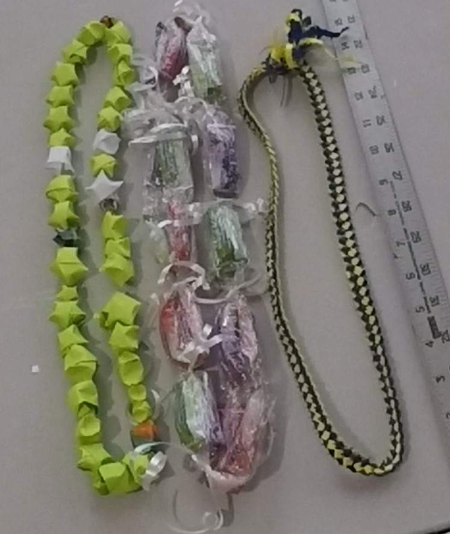

What is a lei?

- List 3 observations you have about the leis in the pictures.
- What do all of the leis have in common? List at least 2 observations.
- What materials are the leis made out of?
There are many different ways to make leis! In this tutorial, you will learn how to make an origami paper star lei.
Click here to learn how to make paper stars.